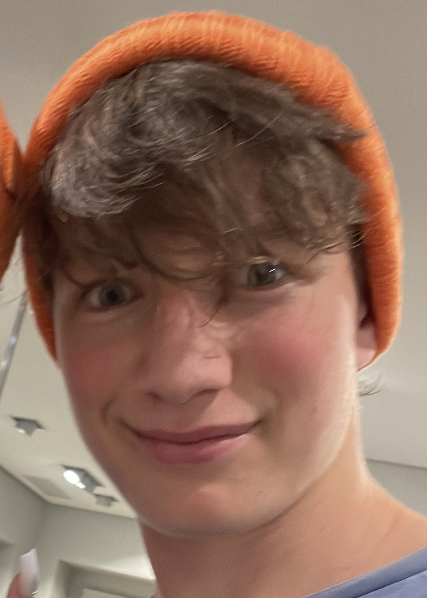
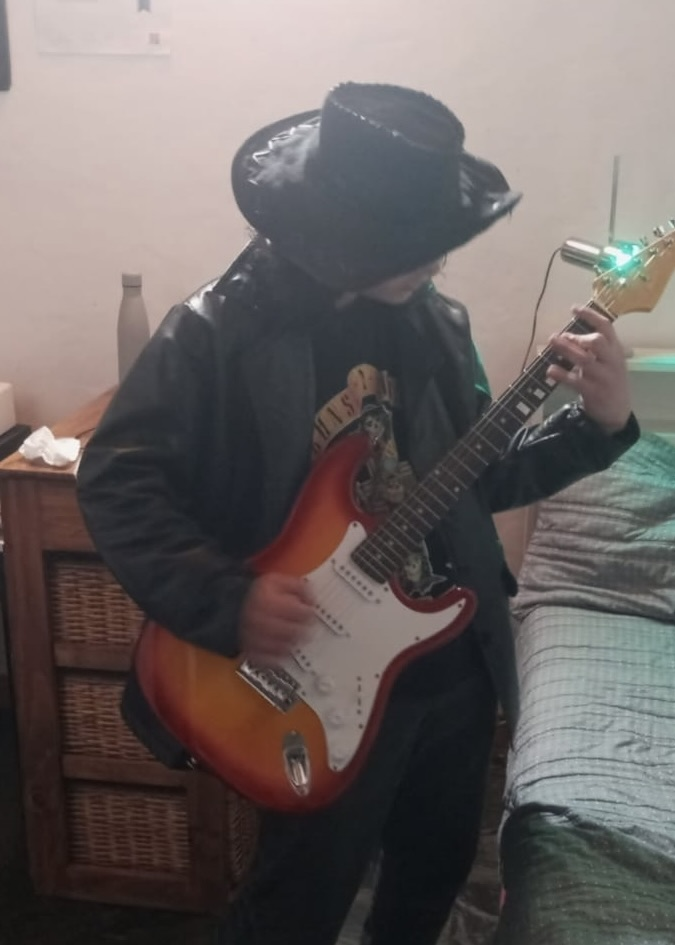
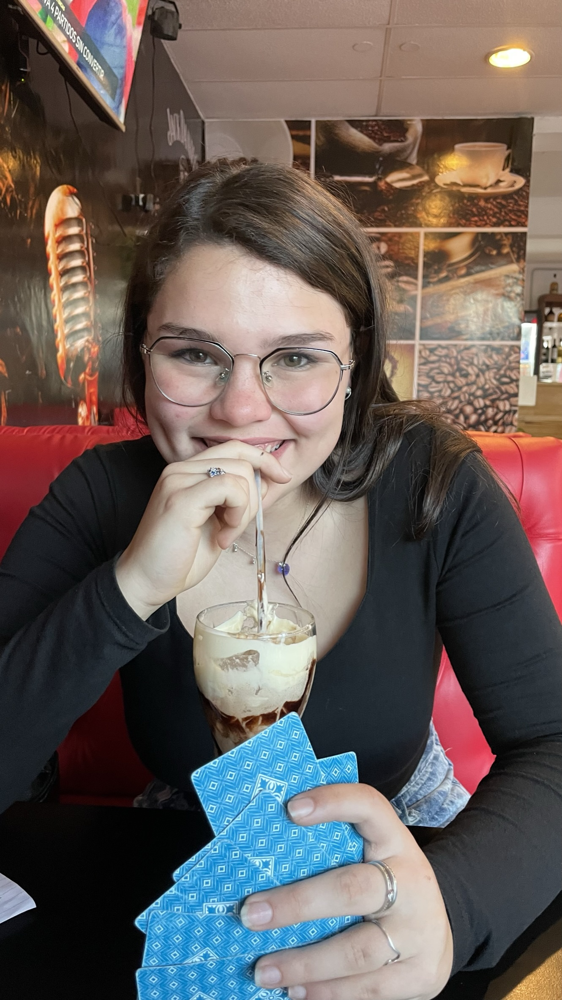

Keanu Solna
Co-fundador y CEO

Leonel Cordero
Co-fundador y Programador

Queralt Colominas
Miembra

Thomas Tetzner
Miembro
Somos un grupo de estudiantes, que queremos aportar nuestro granito de arena al mundo, viendo todas las problematicas ambientales (deforestacion, contaminacion, perdida de biodiversidad, etc.) decidimos irnos por esta rama. Todo comenzo con un proyecto de la escuela que se basa en reforestar las sierras grandes, pero no sera lo ultimo.
Co-fundador y CEO
Co-fundador y Programador
Miembra
Miembro